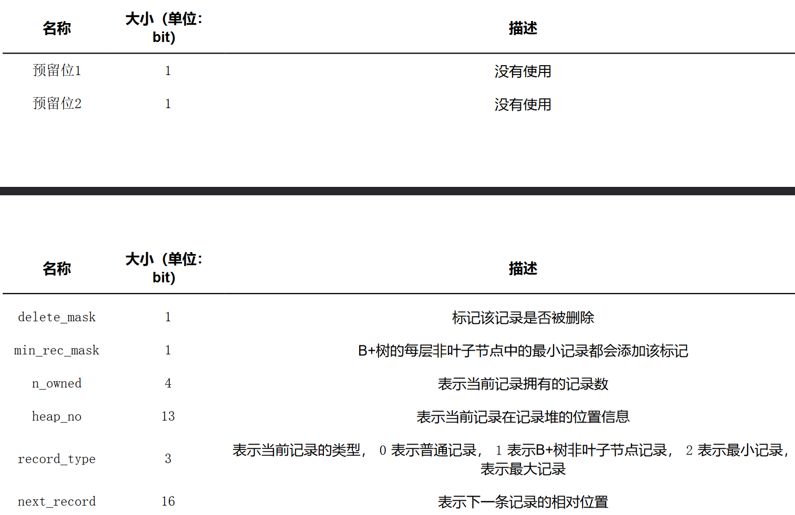
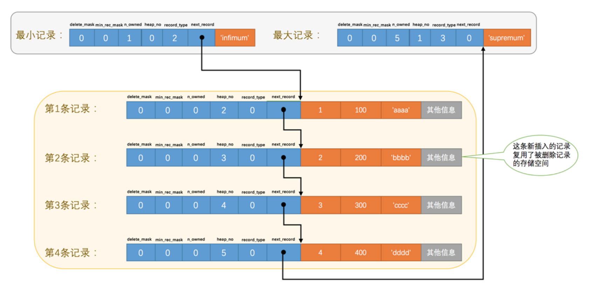

MySql-深入理解InnoDB数据结构
MySQL-深入理解InnoDB数据结构
InnoDB行格式
行格式/Row Format简介
我们平时是以记录为单位来向表中插入数据的，这些记录在磁盘上的存放方式也被称为 行格式 或者 记录格式 。
InnooDB目前有四种行格式：
- compact（简洁的）
- redundant（冗余的）
- dynamic（动态的）
- compress（压缩的）
创建表时可以指定它的 行格式 ：
1 | CREATE TABLE record_format_demo ( |
COMPACT行格式
废话不多说，直接看图：
COMPACT行格式
废话不多说，直接看图：
一条完整的记录其实可以被分为 记录的额外信息 和 记录的真实数据 两大部分。
变长字段长度列表
MySQL 支持一些变长的数据类型，比如 VARCHAR(M) 、 VARBINARY(M) 、各种 TEXT 类型，各种 BLOB 类型，变长字段中存储多少字节的数据是不固定的，所以我们在存储真实数据的时候需要顺便把这些数据占用的字节数也存起来，这样才不至于把 MySQL 服务器搞懵。
在 Compact 行格式中，把所有变长字段的真实数据占用的字节长度都存放在记录的开头部位，从而形成一个变长字段长度列表，各变长字段数据占用的字节数按照列的顺序逆序存放，我们再次强调一遍，是逆序存放！

如上图，其 变长字段长度列表 的效果为：
另外需要注意的一点是，变长字段长度列表中只存储值为 非NULL 的列内容占用的长度，值为 NULL 的列的长度是不储存的 。
NULL值列表
如果表中没有允许存储 NULL 的列，则 NULL值列表 也不存在了，否则将每个允许存储 NULL 的列对应一个二进制位，二进制位按照列的顺序逆序排列，二进制位表示的意义如下：
- 二进制位的值为 1 时，代表该列的值为 NULL 。
- 二进制位的值为 0 时，代表该列的值不为 NULL 。
MySQL 规定 NULL值列表 必须用整数个字节的位表示，如果使用的二进制位个数不是整数个字节，则在字节的高位补 0 。


所以这两条记录在填充了 NULL值列表 后的示意图就是这样：
记录头信息
用于描述记录的记录头信息，它是由固定的5个字节组成。也就是40个二进制位，不同的位代表不同的意思。
这些二进制位代表的详细信息如下表：（只需要看一遍混个脸熟，等之后用到这些属性的时候我们再回过头来看）
记录的真实数据
对于 record_format_demo 表来说， 记录的真实数据 除了 c1 、 c2 、 c3 、 c4 这几个我们自己定义的列的数据以外， MySQL 会为每个记录默认的添加一些列（也称为 隐藏列 ），具体的列如下：
InnoDB 表对主键的生成策略
优先使用用户自定义的主键作为主键，如果用户没有定义主键，则选取一个 Unique 键作为主键，如果表中连 Unique 键都没有定义的话，则 InnoDB 会为表默认添加一个名为row_id 的隐藏列作为主键。
因为表 record_format_demo 并没有定义主键，所以 MySQL 服务器会为每条记录增加上述的3个列。现在看一下加上 记录的真实数据 的两个记录长什么样吧：
CHAR(M)列的存储格式
record_format_demo 表的 c1 、 c2 、 c4 列的类型是 VARCHAR(10) ，而 c3 列的类型是 CHAR(10) ，我们说在Compact 行格式下只会把变长类型的列的长度逆序存到 变长字段长度列表 中。
但是这只是因为我们的 record_format_demo 表采用的是 ascii 字符集，这个字符集是一个定长字符集，也就是说表示一个字符采用固定的一个字节，如果采用变长的字符集（也就是表示一个字符需要的字节数不确定，比如gbk 表示一个字符要12个字节、 utf8 表示一个字符要13个字节等）的话， c3 列的长度也会被存储到 变长字段长度列表 中。
这就意味着：对于 CHAR(M) 类型的列来说，当列采用的是定长字符集时，该列占用的字节数不会被加到变长字段长度列表，而如果采用变长字符集时，该列占用的字节数也会被加到变长字段长度列表。
另外有一点还需要注意，变长字符集的 CHAR(M) 类型的列要求至少占用 M 个字节，而VARCHAR(M) 却没有这个要求。比方说对于使用 utf8 字符集的 CHAR(10) 的列来说，该列存储的数据字节长度的范围是10～30个字节。即使我们向该列中存储一个空字符串也会占用 10 个字节，这是怕将来更新该列的值的字节长度大于原有值的字节长度而小于10个字节时，可以在该记录处直接更新，而不是在存储空间中重新分配一个新的记录空间，导致原有的记录空间成为所谓的碎片。
Redundant行格式
其实知道了 Compact 行格式之后，其他的行格式就是依葫芦画瓢了。Redundant 行格式是MySQL5.0 之前用的一种行格式，也就是说它已经非常老了，此处就不做介绍了。
Dynamic和Compressed行格式
下边要介绍另外两个行格式， Dynamic 和 Compressed 行格式，我现在使用的 MySQL 版本是 5.7，它的默认行格式就是 Dynamic ，这俩行格式和 Compact 行格式挺像，只不过在处理 行溢出 数据时有点儿分歧，它们不会在记录的真实数据处存储字段真实数据的前 768 个字节，而是把所有的字节都存储到其他页面中，只在记录的真实数据处存储其他页面的地址，就像这样：
Compressed 行格式和 Dynamic 不同的一点是， Compressed 行格式会采用压缩算法对页面进行压缩，以节省空间。
总结
页是 MySQL 中磁盘和内存交互的基本单位，也是 MySQL 是管理存储空间的基本单位。
InnoDB 目前定义了4种行格式
COMPACT行格式
Redundant行格式
Dynamic和Compressed行格式
这两种行格式类似于 COMPACT行格式 ，只不过在处理行溢出数据时有点儿分歧，它们不会在记录的真实数据处存储字符串的前768个字节，而是把所有的字节都存储到其他页面中，只在记录的真实数据处存储其他页面的地址。另外， Compressed 行格式会采用压缩算法对页面进行压缩。
一个页一般是 16KB ，当记录中的数据太多，当前页放不下的时候，会把多余的数据存储到其他页中，这种现象称为 行溢出 。
InnoDB页简介
InnoDB 是一个将表中的数据存储到磁盘上的存储引擎，所以即使关机后重启我们的数据还是存在的。而真正处理数据的过程是发生在内存中的，所以需要把磁盘中的数据加载到内存中，如果是处理写入或修改请求的话，还需要把内存中的内容刷新到磁盘上。而我们知道读写磁盘的速度非常慢，和内存读写在速度上差了几个数量级，所以当我们想从表中获取某些记录时， InnoDB 存储引擎需要一条一条的把记录从磁盘上读出来么？
不，那样会慢死，InnoDB 采取的方式是：将数据划分为若干个页，以页作为磁盘和内存之间交互的基本单位，InnoDB中页的大小一般为 16 KB。也就是在一般情况下，一次最少从磁盘中读取16KB的内容到内存中，一次最少把内存中的16KB内容刷新到磁盘中。
数据页代表的这块 16KB 大小的存储空间可以被划分为多个部分，不同部分有不同的功能，各个部分如图所示：

从图中可以看出，一个 InnoDB 数据页的存储空间大致被划分成了 7 个部分，有的部分占用的字节数是确定的，有的部分占用的字节数是不确定的。下边我们用表格的方式来大致描述一下这7个部分都存储一些啥内容（快速的瞅一眼就行了）：
记录在页中的存储
- 存储的记录会按照我们指定的行格式存储到User Records部分。
- 一开始生成页的时候，其实并没有User Records这个部分，每当我们插入一条记录，都会从Free Space部分，也就是尚未使用的存储空间中申请一个记录大小的空间划分到User Records部分。
- 当Free Space部分的空间全部被User Records部分替代掉之后，也就意味着这个页使用完了，如果还有新的记录插入的话，就需要去申请新的页了。
记录头信息的秘密
为了故事的顺利发展，我们先创建一个表：
1 | CREATE TABLE page_demo( |
这个新创建的 page_demo 表有3个列，其中 c1 和 c2 列是用来存储整数的， c3 列是用来存储字符串的。需要注意的是，我们把 c1 列指定为主键，所以在具体的行格式中InnoDB就没必要为我们去创建那个所谓的 row_id 隐藏列了。而且我们为这个表指定了 ascii 字符集以及 Compact 的行格式。所以这个表中记录的行格式示意图就是这样的：
从图中可以看到，我们特意把 记录头信息 的5个字节的数据给标出来了，说明它很重要，我们再次先把这些 记录头信息 中各个属性的大体意思浏览一下（我们目前使用 Compact 行格式进行演示）：
下边我们试着向 page_demo 表中插入几条记录：
1 | INSERT INTO page_demo VALUES(1, 100, 'aaaa'), (2, 200, 'bbbb'), (3, 300, 'cccc'), (4, 400, 'dddd'); |
为了方便分析这些记录在 页 的 User Records 部分中是怎么表示的，把记录中头信息和实际的列数据都用十进制表示出来了（其实是一堆二进制位），所以这些记录的示意图就是：
看这个图的时候需要注意一下，各条记录在 User Records 中存储的时候并没有空隙，这里只是为了大家观看方便才把每条记录单独画在一行中。我们对照着这个图来看看记录头信息中的各个属性是啥意思：
delete_mask：
- 这个属性标记着当前记录是否被删除，占用1个二进制位，值为 0 的时候代表记录并没有被删除，为 1 的时候代表记录被删除掉了。
- 被删除的记录还在 页 中么？是的，你以为它删除了，可它还在真实的磁盘上。这些被删除的记录之所以不立即从磁盘上移除，是因为移除它们之后把其他的记录在磁盘上重新排列需要性能消耗，所以只是打一个删除标记而已，所有被删除掉的记录都会组成一个所谓的 垃圾链表 ，在这个链表中的记录占用的空间称之为所谓的 可重用空间 ，之后如果有新记录插入到表中的话，可能把这些被删除的记录占用的存储空间覆盖掉。
min_rec_mask：
- B+树的每层非叶子节点中的最小记录都会添加该标记。
n_owned ：这个暂时保密，稍后它就是主角～
heap_no：
- 这个属性表示当前记录在本页中的位置，从图中可以看出来，我们插入的4条记录在本 页 中的位置分别是： 2 、 3 、 4 、 5 。是不是少了点啥？是的，怎么不见 heap_no 值为 0 和 1 的记录呢？
这其实是设计 InnoDB 者的一个小把戏，他们自动给每个页里边儿加了两个记录，由于这两个记录并不是我们自己插入的，所以有时候也称为 伪记录 或者 虚拟记录 。这两个伪记录一个代表 最小记录 ，一个代表 最大记录 。
- 这个属性表示当前记录在本页中的位置，从图中可以看出来，我们插入的4条记录在本 页 中的位置分别是： 2 、 3 、 4 、 5 。是不是少了点啥？是的，怎么不见 heap_no 值为 0 和 1 的记录呢？

一下哈~，记录可以比大小么？是的，记录也可以比大小，对于一条完整的记录来说，比较记录的大小就是比较 主键 的大小。比方说我们插入的4行记录的主键值分别是： 1 、 2 、 3 、 4 ，这也就意味着这4条记录的大小从小到大依次递增。
由于这两条记录不是我们自己定义的记录，所以它们并不存放在 页 的 User Records 部分，他们被单独放在一个称为 Infimum + Supremum 的部分，如图所示：
从图中我们可以看出来，最小记录和最大记录的 heap_no 值分别是 0 和 1 ，也就是说它们的位置最靠前。
record_type：
这个属性表示当前记录的类型，一共有4种类型的记录：
0 表示普通记录
1 表示B+树非叶节点记录
2 表示最小记录
3 表示最大记录
从图中我们也可以看出来，我们自己插入的记录就是普通记录，它们的record_type 值都是 0 ，而最小记录和最大记录的 record_type 值分别为 2 和 3 。
next_record：
它表示从当前记录的真实数据到下一条记录的真实数据的地址偏移量。
比方说第一条记录的 next_record 值为 32 ，意味着从第一条记录的真实数据的地址处向后找 32 个字节便是下一条记录的真实数据。如果你熟悉数据结构的话，就立即明白了，这其实是个链表 ，可以通过一条记录找到它的下一条记录。
下一条记录 是按照主键值由小到大的顺序的下一条记录。而且规定 Infimum记录（也就是最小记录） 的下一条记录就是本页中主键值最小的用户记录，而本页中主键值最大的用户记录的下一条记录就是 Supremum记录（也就是最大记录）
- 如果从中删除掉一条记录，这个链表也是会跟着变化的，比如我们把第2条记录删掉：
从图中可以看出来，删除第2条记录前后主要发生了这些变化： 第2条记录并没有从存储空间中移除，而是把该条记录的delete_mask值设置为1。 第2条记录的next_record值变为了0，意味着该记录没有下一条记录了。 第1条记录的next_record指向了第3条记录。 还有一点你可能忽略了，就是最大记录的n_owned值从5变成了4，关于这一点的变化我们稍后会详细说明的。
如果我们再次把这条记录插入到表中的话
- 
从图中可以看到，InnoDB并没有因为新记录的插入而为它申请新的存储空间，而是直接复用了原来被删除记录的存储空间。
当数据页中存在多条被删除掉的记录时，这些记录的next_record属性将会把这些被删除掉的记录组成一个垃圾链表，以备之后重用这部分存储空间。
参考文档：
 微信
微信